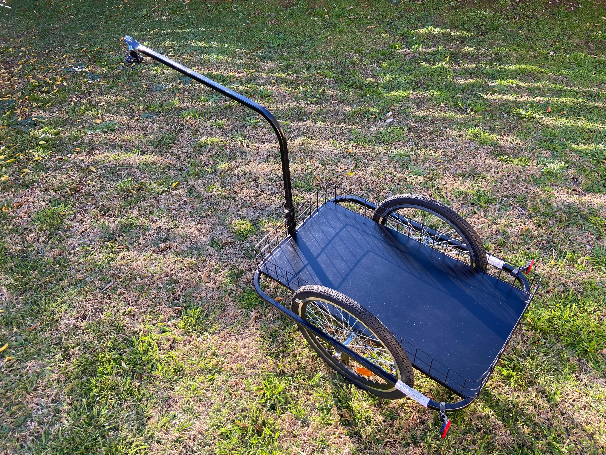
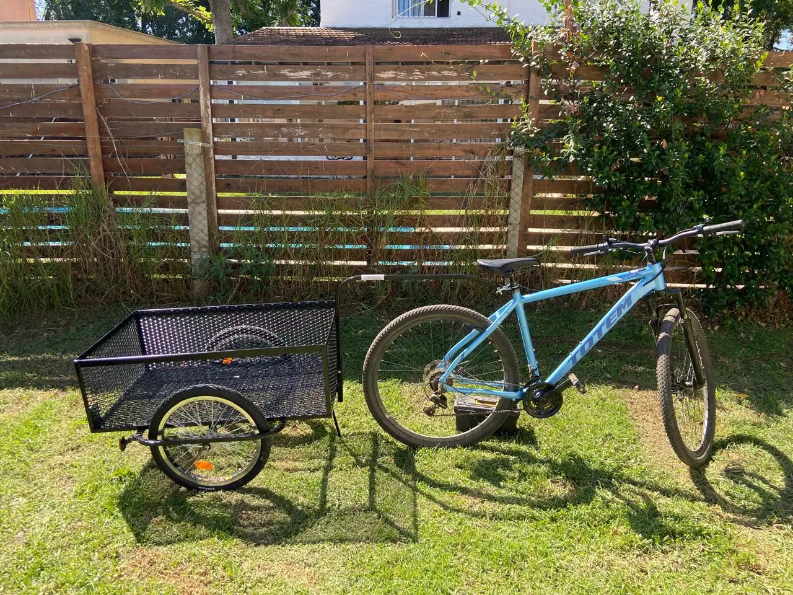
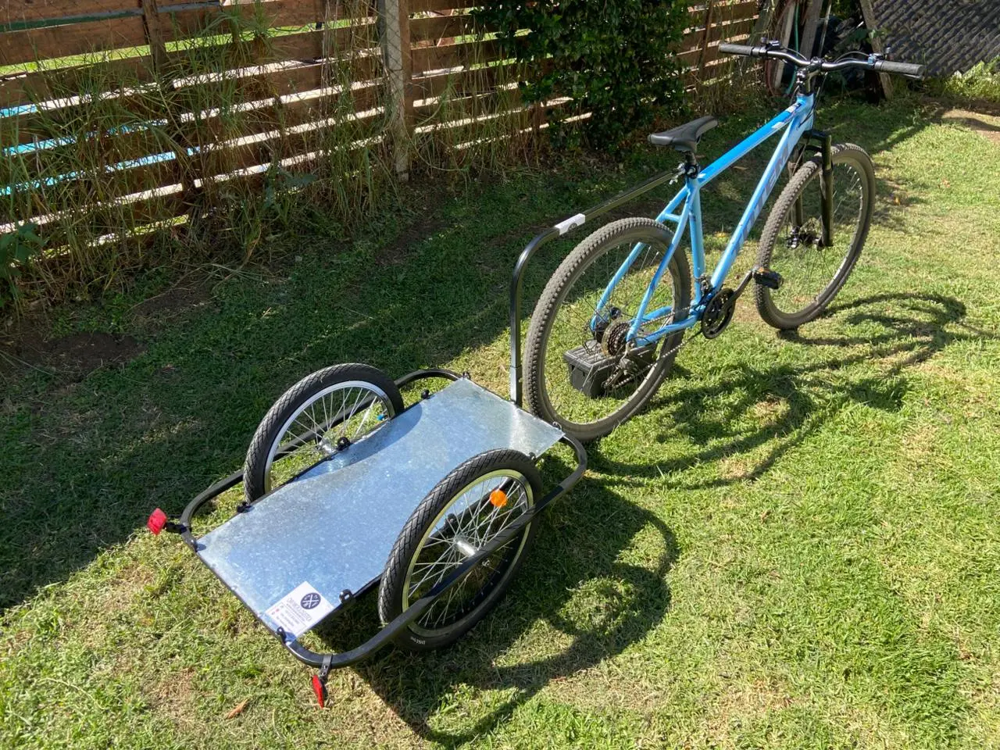
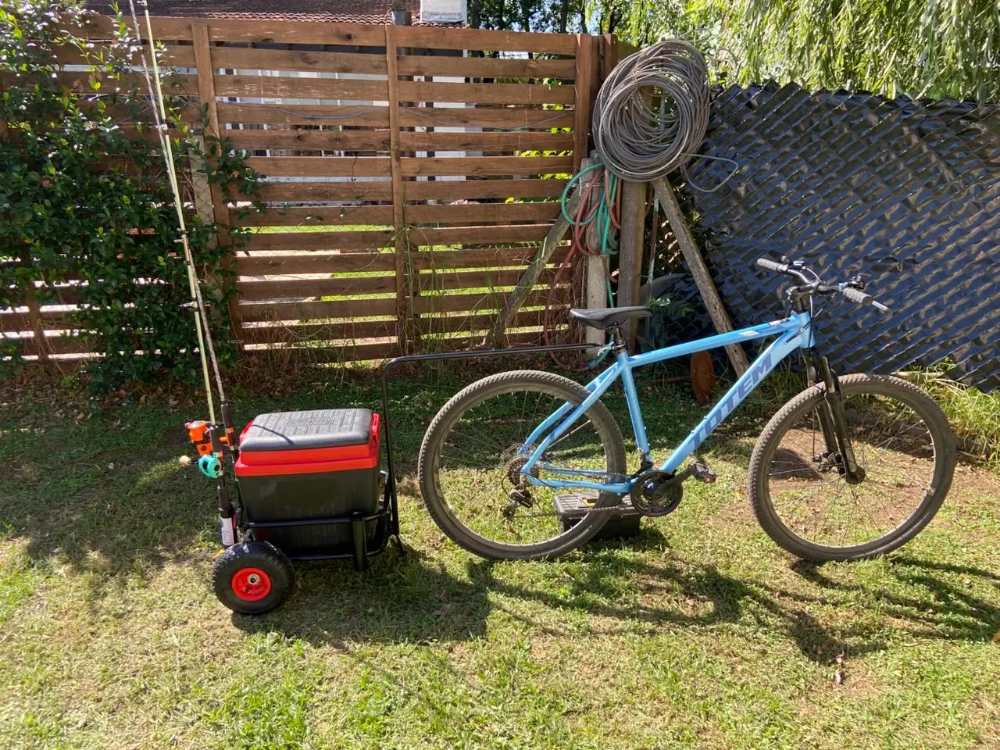

Aumentá tu capacidad de carga hasta 80kg SIN nafta
Tráileres argentinos robustos para bicicleta. Enganche universal, múltiples usos: reparto, camping, pesca, mudanzas ecológicas. Fabricación líder en Pilar.

Aplicaciones de Tráileres para Bicicleta: Reparto, Camping y Más
Un EcotrailPilar se adapta a tu día a día. Descubrí cómo potenciar tu bicicleta.
Reparto urbano
Llevá pedidos, herramientas o mercadería de forma ágil y ecológica.
Aventuras de camping
Cargá carpa, sleeping, cocina y todo lo necesario para tu escapada.
Modelos estándar y a medida
Para uso urbano, trabajo y recreación.
Calidad y Refuerzo en Tráileres para Bicicleta EcotrailPilar
EcotrailPilar nace en Pilar, Buenos Aires, con la misión de ofrecer soluciones de movilidad sustentable. Cada chasis es soldado y ensamblado bajo estándares industriales.
Usos infinitos: trabajo, recreación y sustentabilidad
Llevá herramientas para tu oficio, equipos de camping, compras del súper, artículos de pesca o cajas de mudanza. Hacé que tu bici trabaje para vos.
Enganche Universal
Sistema de acople rápido y seguro compatible con el 99% de las bicicletas, incluyendo rodados 29. Diseño patentado por EcotrailPilar.
Pintura de Alta Resistencia
Acabado industrial que protege contra corrosión, rayones y clima extremo. Fabricación 100% nacional.
Modelos de Tráileres para Bicicleta Reforzados | EcotrailPilar
Conocé los modelos exclusivos de EcotrailPilar, diseñados para cada necesidad. Calidad industrial y enganche universal.
Todos los modelos incluyen envío GRATIS a todo el país

Urbano Clásico
- Ideal para reparto ligero y compras
- Estructura perimetral reforzada
- Llantas reforzadas con rodamiento sellado
- 12 meses de garantía

Utilitario Enrejado
- Máxima contención de carga
- Alta capacidad para cargas voluminosas
- Malla de acero soldada resistente
- 12 meses de garantía

Urbano Playo
¡APROVECHÁ! LA OFERTA TERMINA EN:
- Base plana libre para cargas irregulares
- Ideal cargas voluminosas o cajas grandes
- Bajo centro de gravedad
- 12 meses de garantía

Modelo Pescador
- Diseñado para terrenos blandos y arena
- Adaptado para playa y caminos rurales
- Soportes específicos para cañas y conservadora
- 12 meses de garantía

Clásico Reforzado
- Primer modelo, probado y perfeccionado
- Chasis reforzado 20x20 mm, uso intensivo
- Ruedas 20", andar estable con carga
- Medidas: 80x60x30 cm
- 12 meses de garantía
Comparativa de Modelos de Tráileres de Carga
Elegí el tráiler que mejor se adapta a tu estilo de vida.
| Modelo | Capacidad | Peso | Uso recomendado | Precio | Envío |
|---|---|---|---|---|---|
| Urbano Clásico | 80 kg | 12 kg | Reparto, compras diarias | $320.000 | GRATIS |
| Utilitario Enrejado | 80 kg | 14 kg | Cargas voluminosas, herramientas | $350.000 | GRATIS |
| Urbano Playo | 80 kg | 11 kg | Mudanzas, cajas grandes | $190.000 PROMO | GRATIS |
| Pescador | 70 kg | 13 kg | Pesca, playa, terrenos blandos | $290.000 | GRATIS |
| Clásico Reforzado | 80 kg | 12 kg | Trabajo intensivo, herramientas, diario | $320.000 | GRATIS |
¿Cómo comprar tu EcotrailPilar?
Simple, rápido y seguro.
Elegí tu modelo
Explorá nuestra flota y seleccioná el tráiler que mejor se adapte a tus necesidades.
Pagá como prefieras
Mercado Pago, transferencia, tarjetas en cuotas. Todos los medios aceptados.
Recibilo gratis en tu domicilio
Envío sin cargo a todo el país con correo privado u OCA. Coordinamos la entrega.
Disfrutá tu tráiler
Armado sencillo, manual incluido y soporte postventa. ¡A pedalear con carga!
¿Por qué elegir Tráileres para Bicicleta EcotrailPilar?
Líderes en fabricación de tráileres para bicicleta con respaldo de cientos de clientes satisfechos.
Mejor relación precio-calidad
Ofrecemos tráileres robustos con los mejores materiales del mercado al precio más competitivo. Financiación en cuotas.
Postventa y repuestos
Contamos con servicio de repuestos y atención personalizada para que tu EcotrailPilar dure toda la vida.
Más de 500 unidades vendidas
Clientes en todo el país confían en nuestros remolques para bicicleta para reparto, camping y logística sustentable.
Opiniones de Clientes sobre Tráileres EcotrailPilar
"Compré el Enrejado para mi reparto de ferretería. Lo cargo con cajas pesadas y ni se mueve. La estructura es un tanque. EcotrailPilar calidad total."
"Excelente terminación. El enganche a la bici (rodado 29) quedó perfecto en 5 minutos. Muy recomendable, marca argentina confiable."
"Llevé el Playo XL a la costa. Carga la conservadora, las reposeras y la sombrilla sin problemas por la arena. EcotrailPilar se banca todo."
Preguntas Frecuentes sobre Tráileres para Bicicleta
¿El enganche sirve para cualquier bicicleta?
¿Para qué usos puedo aprovechar mi EcotrailPilar?
¿Cuánto cuesta el envío?
¿Hacen envíos al interior del país?
¿Los tráileres vienen armados?
¿Qué garantía tienen?
Sobre EcotrailPilar – Fabricantes de Tráileres para Bicicleta
Ubicación: Pilar, Buenos Aires, Argentina.
Trayectoria: Más de 5 años fabricando soluciones de movilidad sustentable.
Proceso de fabricación: Chasis de caño estructural 20x20 mm, soldadura y ensamblaje en taller propio, pintura electrostática anticorrosiva.
Modelo destacado: El Clásico Reforzado es nuestro más vendido, diseñado para uso intensivo.
Público objetivo: Repartidores, campistas, pescadores, familias y todo aquel que busque una alternativa ecológica y robusta.
Seguinos en nuestras redes
Conocé más sobre EcotrailPilar, novedades, promociones y todo lo que hacemos día a día.